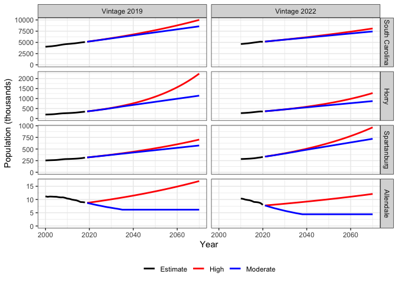

An R-package containing population projections for the state of South Carolina.
scpopulation is an open-source R-package published as a repository on GitHub. The package stores county level population data and projections from the South Carolina Office of Revenue and Fiscal Affairs (SC RFA), extended to 2070 and with an additional high growth scenario. The population projection scenarios presented here have been used for water availability planning in SC. This website documents the scpopulation R-package and provides access to the data for the general public without requiring the use of R software.
This package and website was developed and is maintained by Dr. Charles Alex Pellett, while working at the South Carolina Department of Natural Resources (SC DNR) and subsequently the South Carolina Department of Environmental Services (SC DES). This information is intended for research and long-term water planning. None of the above guarantees the accuracy, reliability, or completeness of this information. The SC RFA, SC DNR, SC DES, and Dr. Pellett are NOT liable for any loss or damage arising from the use of this information.
More information on the SC RFA projections is available on their website:
More information on the South Carolina Water Plan is available on the SC DES website:
https://www.des.sc.gov/programs/bureau-water/hydrology/water-planning/water-planning-overview
Overview
Two editions, or “vintages,” of the SC RFA projections are included in this package, 2019 and 2022. Both editions have been used as inputs to the River Basin Plans which have been developed in South Carolina over this time. Each edition of the RFA projections includes a single scenario which extends 15 years. For the purpose of long-term water planning, the projections are extended to 2070, and an additional scenario of high population growth has been developed. The graphs below illustrate both editions of the results, at a state-wide level and for several example counties.
county_ex <- c('South Carolina', 'Horry', 'Spartanburg', 'Allendale')
pop_proj |>
dplyr::mutate(County = stringr::str_to_title(County),
Edition = paste0('Vintage ', Edition)) |>
dplyr::filter(County %in% county_ex) |>
dplyr::mutate(County = forcats::as_factor(County) |>
forcats::fct_relevel(county_ex)) |>
plot_editions_simple() +
ggplot2::theme(legend.position='bottom', legend.title=ggplot2::element_blank()) +
ggplot2::ylab('Population (thousands)')
# ggplot2::ggsave('plots/selected counties.png', height=6, width=6)For each edition of the RFA projections, the RFA population numbers are represented by the “Moderate” scenario. The Moderate scenario is intended to represent a probable scenario of moderate growth. The “High” scenario is intended to represent a plausible, but unlikely, scenario of high growth. It is an extrapolation based on simple methods. Overall, the population of South Carolina is projected to continue growing, but the more recent projections are generally lower than the earlier edition.
Horry county is an example of a rapidly growing population which is no longer projected to grow as rapidly. The difference is most clear in the High scenario. Stakeholders in the Pee Dee basin noted that the earlier edition of the High scenario in Horry county seemed unrealistically high, and the updated edition seemed more realistic.
Spartanburg county is an example of a rapidly growing county which is now projected to grow even faster. Stakeholders in the Broad basin had commented on the earlier edition of the projections that the High population scenario seemed more realistic than the Moderate population scenario in Spartanburg county. The updated projections appear to align more closely with their expectations.
Allendale county is an example of a shrinking population. For the purposes of long-term planning for water availability at a basin-wide scale, it is generally important to plan for growth. In the High scenario, all counties grow at least 10% faster than the statewide average projected by SC RFA. In the Moderate scenario, declining populations are projected to stabilize at the end of the SC RFA projection period.
The SC RFA publishes their population projections approximately a year after the population data is released (by the US Census). Thus, the “vintage” of the data precedes the year of publication.
The Methods section of this document includes metadata from the SC RFA and a detailed description of the calculations for the extended projections and High scenario.
The Results section includes graphical and tabular results for all counties.